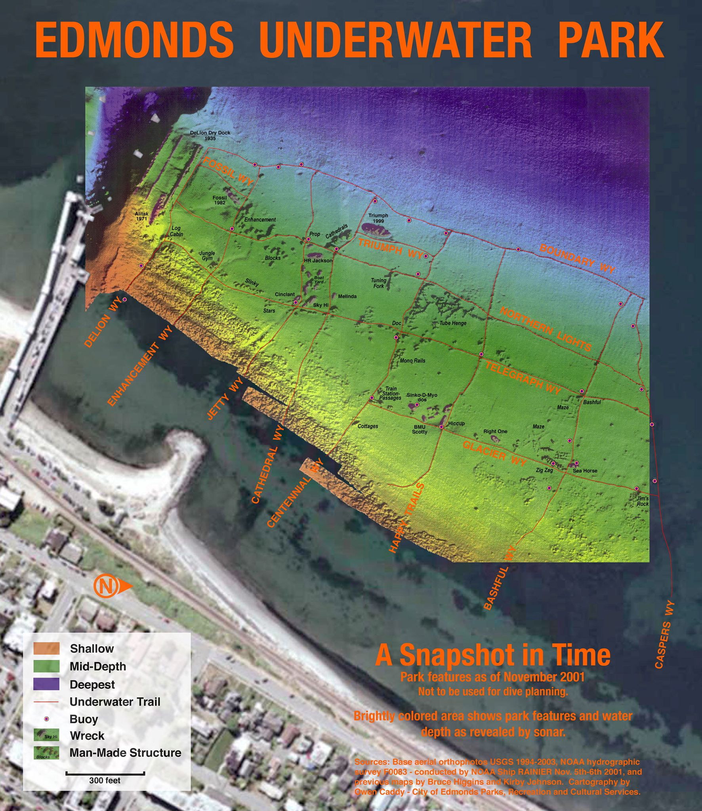
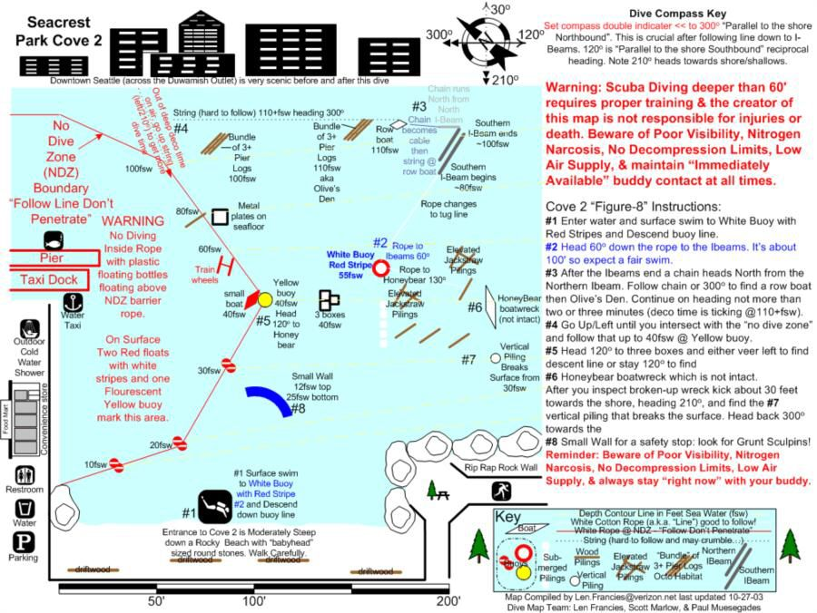

Freediving
Safety Tips
- Adjust your weight belt so you float without moving
- Don’t use the snorkel (since you will swollow water if you blackout)
- Equalize using the Frenzel Technique
- One up one down - when your partner dive, you stay on the surface
- Watch your partner as they go down
- Stay 3 feet away from your partner when they come back so you can grab them if they blackout
- Watch your partner for 30 seconds after they came back (most blackouts happen after 2-3 breaths)
- Watch for your partner’s lips color - blue lips might indicate lack of oxygen
- Don’t hyperventilate
- When you are back at the surface, take 3 hook breaths (count to 3 before exhale), and 3 short cleansing breaths
Based on Free online safety course (videos. 1 hour total)
What to do if your partner blackedout
- Hold them above the water in one hand, and keep his chin up in the other hand
- Turn them on their back
- Breath toward both eyes, Tap on thier cheek, and call their name. Repate until they wake up
Edmonds Underwater Park (UWP)
They’ve moved buoys around at Edmonds so it’s outdated 
Alki

Magnolia
Mercer Island
7820 78th Ave SE, Mercer Island, WA 98040